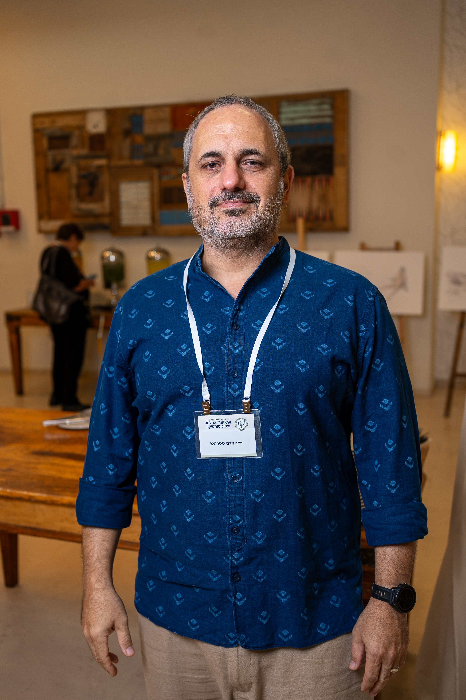
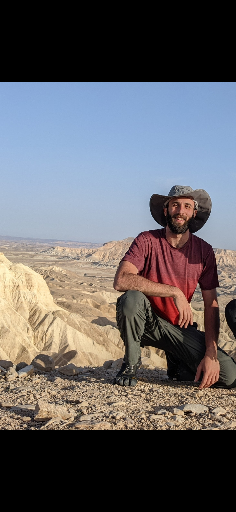
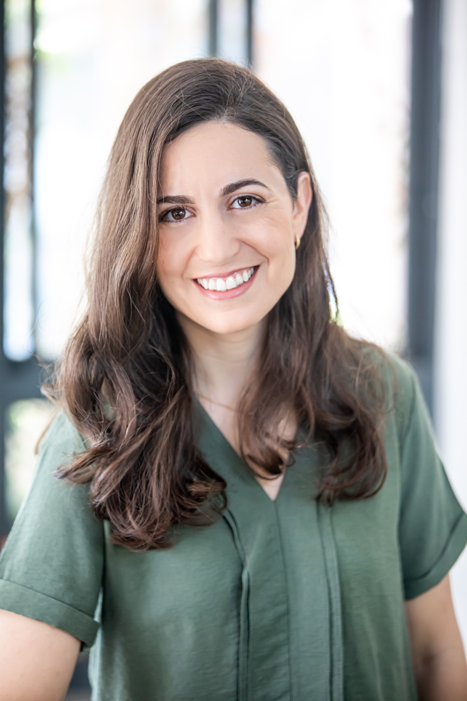
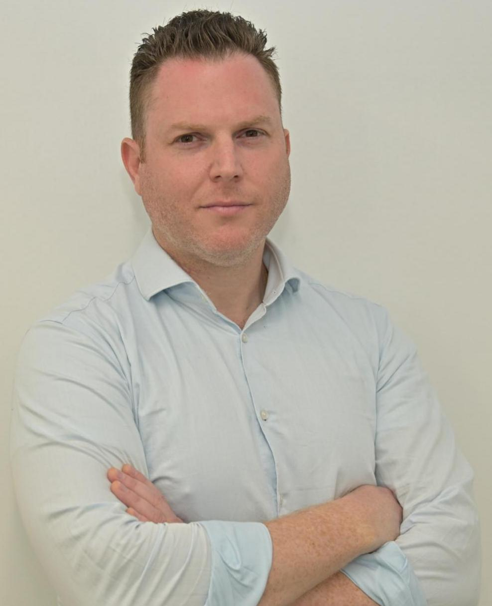
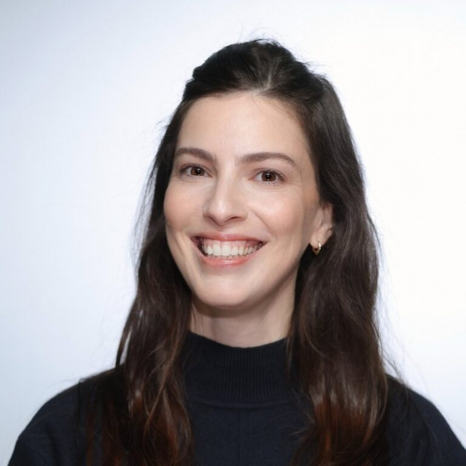
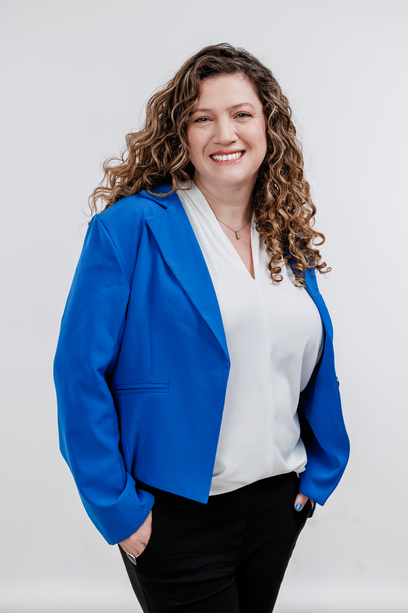
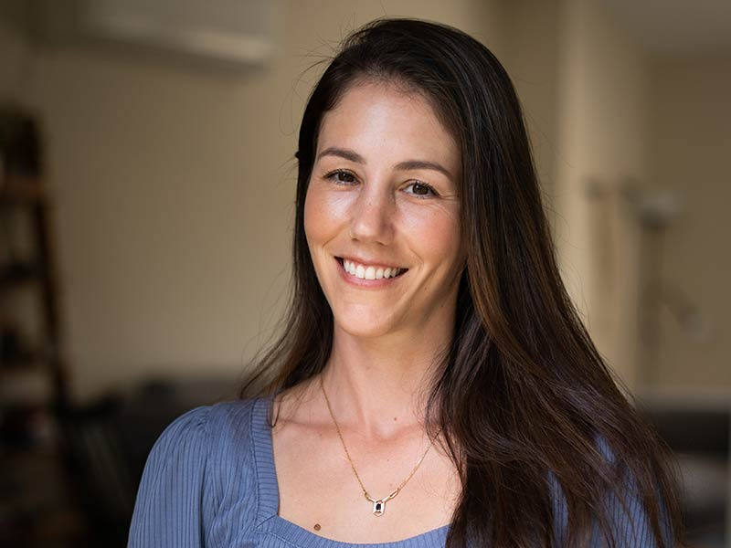

ד״ר רים מח׳ול שחאדה
רפואת משפחה מומחית
הכירו את הרופאות, הרופאים ואנשי המקצוע שלנו, המציעים מגוון תחומי מומחיות תחת קורת גג קהילתית אחת.
המידע להלן מבוסס על רשימת אנשי המקצוע שפורסמה עבור המרפאה. לקבלת זמינות, שעות קבלה או פרטים נוספים על שירות מסוים, אנא התקשרו למרפאה.
רפואת משפחה מומחית

מנהל-שותף ומייסד-שותף של המרכז לרפואת הקהילה · רפואת משפחה וכירורגיה כללית
ד״ר אדם סטריאר הוא מנהל-שותף ומייסד-שותף של המרכז לרפואת הקהילה. יליד 1977 בירושלים, הוא בוגר בית הספר לרפואה של האוניברסיטה העברית בירושלים משנת 2009. סיים התמחות בכירורגיה כללית בשנת 2017, ועבר הסבה לרפואת משפחה תחת שרביטו של ד״ר עמוס ריטר, שלימד והכשיר רופאי משפחה רבים בחיפה. ד״ר אדם הוא מהפנט רפואי בהכשרה, מתעניין וחוקר את עבודת הגוף-נפש ברפואה, חבר ועד באגודה הישראלית לפסיכוסומטיקה והומניסט רדיקלי. הוא נשוי לניצן, גם היא רופאה, אב לשלושה ילדים אהובים ולחתול. הוא אוהב לנגן בחליל צד, לרוץ, לדווש ולעסוק בכל סוג של ספורט ימי שאינו ממונע.

עוזר רופא
יובל בר און הוא סטודנט לרפואה בטכניון, במהלך השנים הקליניות. הוא עובד כעוזר רופא של ד״ר אדם סטריאר במרכז לרפואת הקהילה. יובל נולד בשנת 1995, גדל והתחנך בקריית טבעון. הוא אוהב לשחות, לשמוע ולנגן מוזיקה, לקרוא ולטייל. יובל נשוי לשיר, ויחד הם גרים בבת גלים ומגדלים את הכלב המשוגע שלהם, פנדה.

מומחית לרפואת עור ומין
ד״ר תמר קורן היא מומחית לרפואת עור ומין בחיפה, בוגרת הפקולטה לרפואה בטכניון. את התמחותה ברפואת עור ביצעה בין השנים 2019–2024 במרכז הרפואי העמק בעפולה. היא בעלת ניסיון בטיפול בילדים ובמבוגרים, וכיום עובדת כרופאה בכירה ואחראית מרפאת הפסוריאזיס בבית החולים העמק. במסגרת תפקידה הקימה מרפאה משותפת עם היחידה לראומטולוגיה, המטפלת בחולי פסוריאזיס מורכבים. ד״ר קורן פרסמה מאמרים מדעיים ברפואת עור, עוסקת בהדרכת סטודנטים לרפואה בטכניון ומתנדבת בעמותת ׳למענם׳, המסייעת לניצולי שואה לקבלת מענה רפואי בביתם. היא בוגרת קורס עיוני ומעשי לאסתטיקה רפואית, וחברה באיגוד הישראלי לרפואת עור ומין ובחברה הישראלית לכירורגיה דרמטולוגית. המרפאה הפרטית שלה בחיפה משרתת תושבים מכל אזור הצפון, לרבות קריית אתא, קריית מוצקין, קריית ביאליק, עמק יזרעאל ויוקנעם והסביבה. המרפאה מקבלת תורים פרטיים ומציעה זמינות גבוהה לטיפול דחוף במחלות עור. ד״ר קורן מאמינה באבחון מדויק ובהתאמת טיפול אישי לכל מטופל ומטופלת, תוך הקפדה על מקצועיות, הסבר מפורט בגובה העיניים וגישה אנושית ואמפתית.

מומחה בכירורגיה אורתופדית · החלפות מפרקים וארתרוסקופיות של מפרק הירך
ד״ר יעקב שפירא הוא מומחה בכירורגיה אורתופדית ורופא בכיר במערך האורתופדי בקריה הרפואית רמב״ם. הוא עוסק בהחלפות מפרקים ובניתוחים זעיר-פולשניים (ארתרוסקופיות) של מפרק הירך. בנוסף, הוא מבצע טיפולים משמרי מפרק, ובהם הזרקות חומצה היאלורונית ופלזמה עשירה בטסיות (PRP), בהנחיית אולטרסאונד. ד״ר שפירא מרצה בפקולטה לרפואה של הטכניון ופרסם למעלה מ-100 מאמרים אקדמיים בכתבי עת שעוברים ביקורת עמיתים. הוא הרצה בכנסים מקצועיים בין-לאומיים. את השתלמות העמיתים ביצע ב-American Hip Institute בשיקגו, ארצות הברית, ואת התמחותו במרכז הרפואי רמב״ם בחיפה. הוא בעל תואר דוקטור לרפואה מבית הספר לרפואה של אוניברסיטת דברצן בהונגריה.
גסטרואנטרולוג מומחה
גינקולוגיה והריון בסיכון גבוה
גינקולוגיה ופריון האישה
רפואת ריאות ילדים

מומחית בפסיכיאטריה
ד״ר עירית הרורד אלימלך, M.D., היא רופאה מומחית בפסיכיאטריה, ילידת חיפה ובוגרת הפקולטה לרפואה בגליל של אוניברסיטת בר אילן. השלימה את התמחותה בפסיכיאטריה במרכז הרפואי העמק. היא מנהלת את השירות הפסיכיאטרי באוניברסיטת חיפה ומשמשת מומחית לפסיכיאטריה במרכז לבריאות הנפש של מכבי שירותי בריאות. ד״ר הרורד אלימלך מטפלת במגוון הפרעות פסיכיאטריות, ובהן חרדה, שינויים במצב הרוח ודיכאון, הפרעת דחק פוסט-טראומטית (PTSD) והפרעות אובססיביות.
גינקולוגיה ואולטרסאונד נשים
רפואת עיניים

מומחית לאף, אוזן, גרון וניתוחי ראש וצוואר; אוטונוירולוגיה, מחלות תנועה וסחרחורת
ד״ר אורית סמואל היא בוגרת בית הספר לרפואה של האוניברסיטה העברית בירושלים במסגרת העתודה, והתמחתה ברפואת אף, אוזן, גרון וניתוחי ראש וצוואר בבית החולים כרמל. שירתה במכון לרפואה ימית של חיל הים בחיפה, שם החלה לטפל ולחקור מחלות תנועה וסחרחורת. בהמשך השתלמה ב-Royal Victorian Eye and Ear Hospital, מהמרכזים המובילים בעולם למחלות האוזן ושיווי המשקל, ומשמשת כמרצה בסגל אוניברסיטת מלבורן שבאוסטרליה. היא רופאה בכירה במחלקה לאוטונוירולוגיה במרכז הרפואי לין של שירותי בריאות כללית, עם למעלה מ-15 שנות ניסיון בטיפול במחלות תנועה וסחרחורת. בנוסף, היא מטפלת ברפואת אף, אוזן וגרון בילדים במרכז בריאות הילד של כללית בחיפה. ד״ר סמואל עוסקת במחקר ובכתיבת מאמרים, משתתפת ומרצה בכינוסים בין-לאומיים ומנחה סטודנטים לרפואה, לסיעוד ולפיזיותרפיה. היא מתנדבת בעמותת ״למענם״ לסיוע לניצולי שואה וכן במרפאת ״רוח חדשה״, המעניקה טיפול רפואי לפליטים ולחסרי מעמד בישראל. היא ילידת ותושבת חיפה, נשואה ואמא גאה לשלושה ילדים ולכלב.
דיאטנית קלינית
נג׳ואן חורי היא דיאטנית קלינית המתגוררת בחיפה. מתוך זיקה מגיל צעיר לבריאות, לתזונה ולמדעי המזון, למדה לתואר ראשון בהנדסת מזון וביוטכנולוגיה בטכניון. לאחר סיום לימודיה עבדה כטכנולוגית מזון במפעלי ייצור מזון, ובמקביל הרחיבה את ידיעותיה בתחום בריאות הספורט והשלימה לימודי תעודה כמאמנת כושר במכון וינגייט. לאחר היכרות מעמיקה עם תעשיית המזון, ובפרט עם מזון אולטרה-מעובד, החליטה להמשיך להכשרה במדעי התזונה במטרה לקדם מודעות לבריאות ולהשלכות של צריכת מזון מעובד על הגוף. לצד עבודתה כדיאטנית קלינית במרכז לרפואת הקהילה, היא עובדת במחלקות הפנימיות, במכון הדיאליזה ובמרפאת ההשמנה בבית החולים בני ציון. במסגרת מכבי שירותי בריאות היא עובדת גם במרפאת פצע בהדר, במכון סוכרת מקוון ובבית הרופאים דניה. בזמנה הפנוי היא אוהבת לטייל בעולם, להכיר תרבויות, להתנסות במטבחים חדשים, לטעום ולהכין קפה איכותי, ולשמור על שגרת פעילות גופנית הכוללת בעיקר אימוני כוח, ריצה ויוגה.

פסיכולוגית רפואית מומחית
טליה בל רובינסון היא פסיכולוגית רפואית מומחית, המשלבת חשיבה פסיכודינמית עם כלים קוגניטיביים-התנהגותיים, מיינדפולנס ופילוסופיות מזרחיות. היא עובדת במשך שנים עם מטופלים ברפואה הראשונית, והתמחתה בתחום זה בת.ל.מ ובמסגרת המרפאה הפסיכולוגית, שבה היא ממשיכה לקחת חלק. את הפרקטיקום שלה עשתה במכון הלב בבית החולים שיבא–תל השומר, בעבודה עם מטופלים ועם צוותים קרדיולוגיים. היא בעלת תואר ראשון בפסיכולוגיה ובלימודי מזרח אסיה מאוניברסיטת תל אביב ותואר שני בפסיכולוגיה רפואית מהאקדמית תל אביב–יפו. טליה מתרגלת ומלמדת יוגה במשך שנים, להנאה, להנעה, לוויסות ולהשראה. היא מאמינה שמרפאות הקהילה הן הבית הבריאותי המרכזי של רוב האוכלוסייה, ושיש חשיבות לשיתוף פעולה ולתיאום בין הטיפול הרפואי והפסיכולוגי תחת אותה קורת גג. בעיניה, טיפול מיטבי נותן מענה הן להיבטים הגופניים והן להיבטים הנפשיים, השזורים זה בזה.